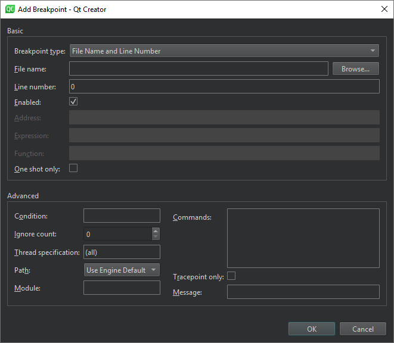

Manage breakpoints
Move breakpoints
To move a breakpoint:
- Drag a breakpoint marker to another line in the text editor.
- In the Breakpoint Preset view or the Breakpoints view, select Edit Selected Breakpoints, and set the line number in Line number.

Delete breakpoints
To delete breakpoints:
- Select the breakpoint marker in the text editor.
- In the Breakpoint Preset view or the Breakpoints view:
- Select the breakpoint and select Delete.
- Select Delete Selected Breakpoints, Delete Selected Breakpoints, or Delete Breakpoints of File in the context menu.
Turn breakpoints on and off
To temporarily turn off a breakpoint without deleting it and losing associated data like conditions and commands:
- Right-click the breakpoint marker in the text editor and select Disable Breakpoint.
- Select a line that has a breakpoint and select Ctrl+F9 (Ctrl+F8 on macOS).
- In the Breakpoint Preset view or the Breakpoints view:
- Select the breakpoint and select Space.
- Select Disable Breakpoint in the context menu.
A hollow breakpoint icon in the text editor and the views indicates a disabled breakpoint. To re-enable a breakpoint, use any of the above methods.
Other than data breakpoints retain their enabled or disabled state when the debugged application is restarted.
See also How To: Debug, Debugging, Debuggers, Debugger, and Setting breakpoints.